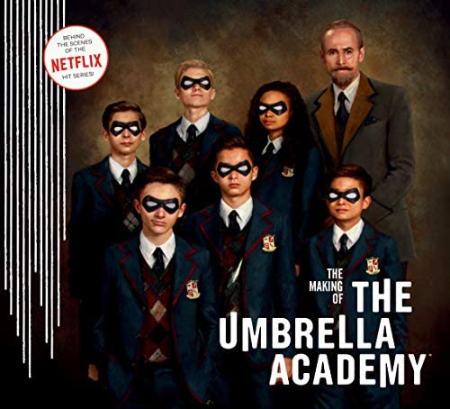
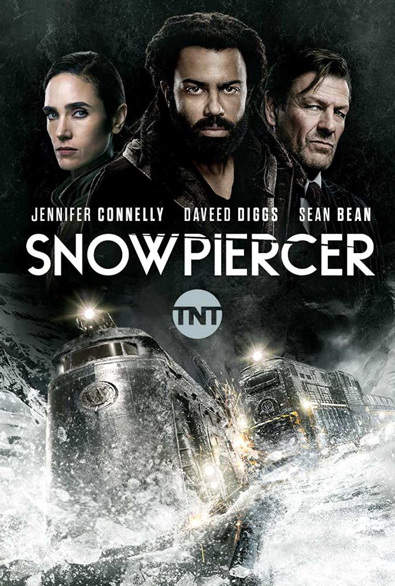

Merhaba ben Resul Albayrak. Kod yazmayı öğreniyorum.
Kod yazmayı öğreniyorum
The Umbrella Academy
The Umbrella Academy dizisi fantastik olayların yaşandığı bir bilimkurgu dizisidir.
Snowpiercer
Snowpiercer buzlar altında kalan bir dünyada trende yaşamı konu alan bir dizidir
Into The Night
Into The Night güneşin insanları öldürdüğü bir evrende geçen olayları anlatmaktadır.